Execute the downloaded file jdk-1_5_0_05-windows-i586-p.exe.
Select I accept the terms in the license agreement radio button and
select the "Next >" button.
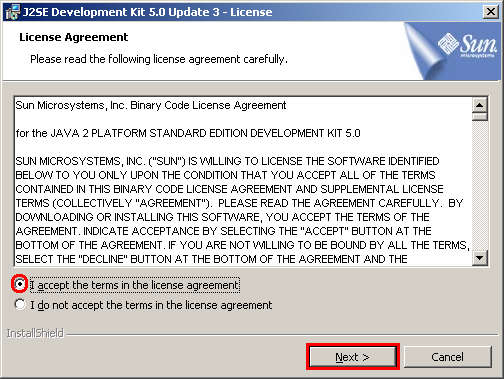
The default installation directory is in the "Program Files" directory in system drive (In the sample screen below, Windows is installed in the "D" drive. In most system, this will be the "C" drive.
I prefer to install Java directly under the root directory.
To change the default installation directory, select the Change... button.
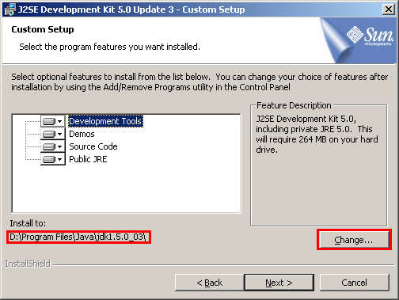
Change "Folder name" to directory create "Java" directory in the root directory by deleting "Programs Files". Select the OK button.
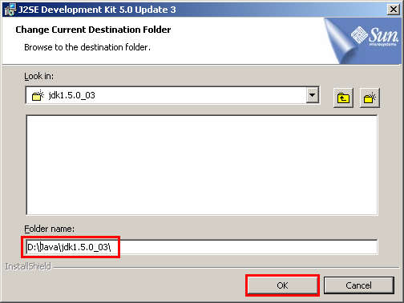
Verify that the Install to: directory has changed.
Select the "Next >" button.
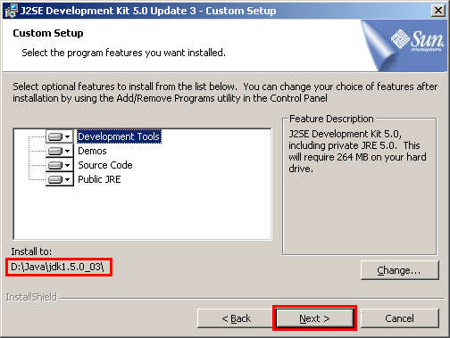
Installation will begin. This will take few minutes depending on your computer.
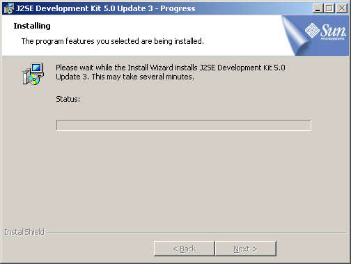
After J2SE Development Kit 5.0 is installed, J2SE Runtime Environment 5.0 is installed. Change the Install to: directory to match the J2SE Development Kit 5.0 directory.
Select the Change button.
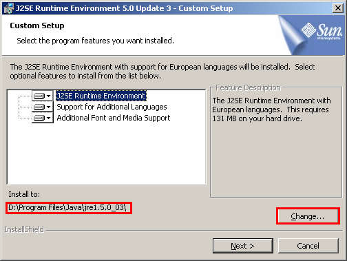
Delete "Programs Files" from the Folder name: and select the OK button.
Verify that the Install to: folder has changed and select the Next button.
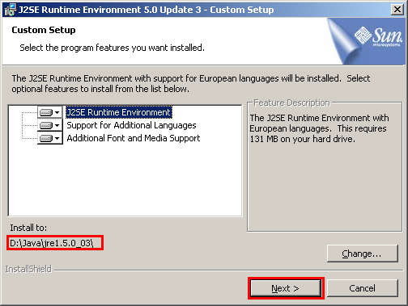
Uncheck Microsoft Internet Explorer to not install Java plug-in in Microsoft Internet Explorer.
Select the Next > button.
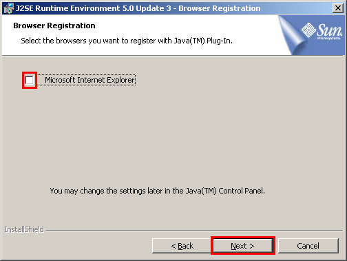
J2SE Runtime Environment will be installed. This may take several minutes depending on your computer.
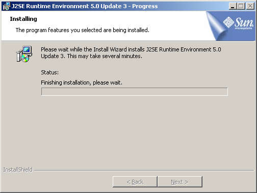
After the installation is completed, select the Finish button.
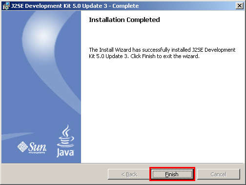
After installing JDK and JRE, it is convenient to set the environmental variable so we will be able to execute Java directly from the command console.
Select the Start menu and select Settings-Control Panel.
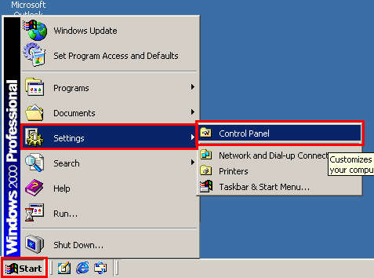
Select the System icon.
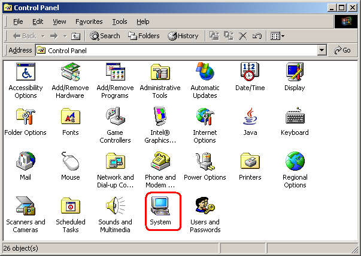
Select the Advanced tab and select the Environment Variables... button.
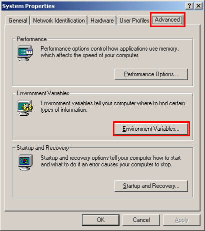
Select Path in the System variables and select the Edit... button.
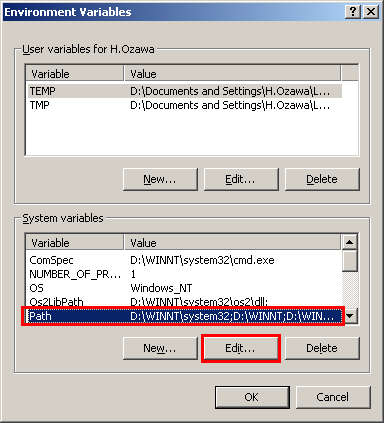
Append the folder where you've installed J2SE Development Kit 5.0 + \bin.
Select the OK button.
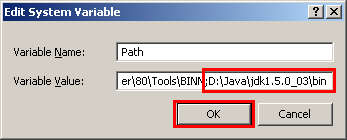
Select the OK button.
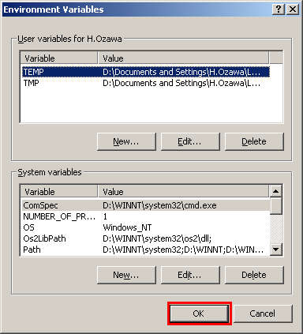
Select the OK button.
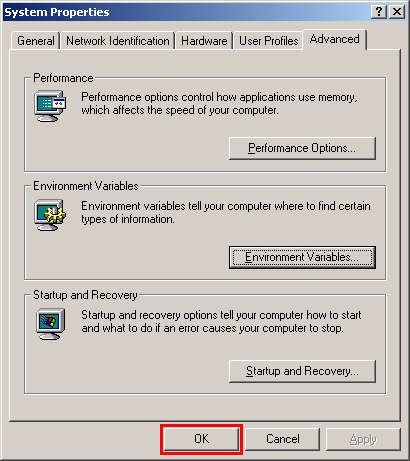
Let test if Java is properly installed.
Select the Start menu button and select Run....
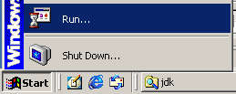
Type in cmd to open a command console window.
Select the OK button.
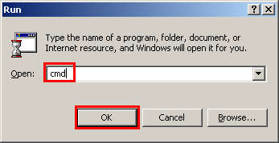
In the command console window, type in java -version and press the Enter key to show the version of Java that is installed on your computer.
It should be build 1.5.0.
This completes Java installation.
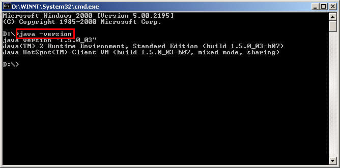
Continue with setup for the tutorial.